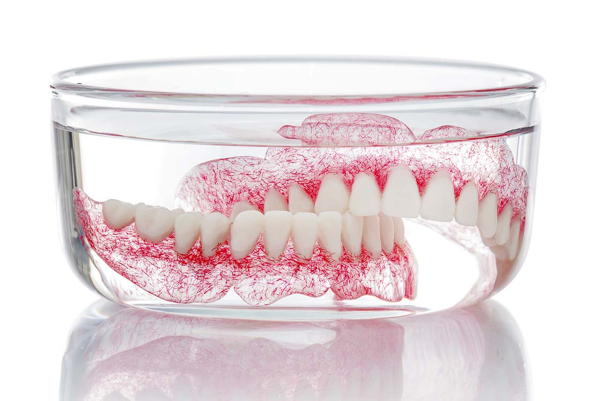

Dantų protezai | Protezų rūšys ir kaip pasirinkti geriausius
 Praleisti Meniu Apie tinklaraštį Parašykite Paieška Apie tinklaraštį ParašykiteDantų protezai
Dantys protezuojami tam, kad vėl galėtų atlikti kramtymo funkciją.
Dantų protezavimas yra speciali medicinos sritis, susijusi su dantų atstatymu tais atvejais, kai dantų trūksta ar jie yra stipriai pažeisti. Svarbiausias dantų protezavimo prioritetas – prevencija; tai – kompleksiniai papildai, burnos ertmės struktūrų priežiūra, o taip pat geresnė gyvenimo kokybė turint sveiką burnos ertmę.
Dantų protezavmas nėra vien estetika. Taip pat būtinas ir funkcinis protezavimas – tai reiškia, kad dantų protezai turi padėti skleisti garsus (fonacija), kramtyti maistą (kramtymas) ir apsaugoti žandikaulį nuo dantų griežimo (bruksizmas).
Žandikaulio sąnarys, kramtymo raumenys, dantys ir dantis laikantis įtaisas sudaro visumą. Tam, kad protezuojant dantis būtų tinkamai sureguliuoti protezai, išmatuojama kaukolės apimtis ir žandikaulio pozicija, taip pat darbą apsunkina veido lankas.
Atlikus šiuos darbus, dantų specalistas įdeda protezų modelį į artikuliatorių. Šis mechanizmas imituoja jūsų žandikaulį ir žandikaulio sąnarį. Tam tikrais atvejais taisyklingas žandikaulio sąkandis ir pozicija apskaičiuojami kompiuterio – aksiografijos pagalba. Visa tai padeda atkurti harmoningą dantų išsidėstymą ir tokiu būdu išvengti daugybės šlifavimo darbų ir sudėtingų kopijų.
Išimami dantų protezai
Kuris nėra matęs dirbtinių dantų stiklinėje vandens ant naktinio stalelio? Kai dar buvome vaikai, mums tai atrodė labai įdomu ir šiek tiek baisu, tačiau tie laikai jau seniai praeity. Fiksuojami ir išimami dantų protezai stipriai skiriasi. Išimami dantų protezai gali būti skirstomi į dalinius ir pilnus dantų protezus.
Atsižvelgiant į galimybę išimti dantų protezus, reikėtų atskirti „esant reikalui išimamus” ir klasikinius išimamus dantų protezus. „Esant reikalui” reiškia, kad dantų protezus gali išimti tik odontologas, kadangi šie prie likusių dantų yra pritvirtinti varžtais ar strypeliais.
Išimamų dantų protezų dienos jau suskaičiuotos. Šiais laikais burnos ertmę galima atstatyti į pradinę jos būklę. Dantų implantų ir protezų dėka, kurie yra patikimai pritvirtinami žandikaulyje ir spaudimą patiriančiose srityse, įdėklai ir prastai įdėti dantų protezai tapo atgyvena.
Didžiausia išimamų dalinių protezų trūkumas – apkrova, tenkanti likusiesioms atraminėms vietoms. Tiesa, kad specialių techninių konstrukcijų dėka ši apkrova gali būti minimaliai sumažinta, tačiau nelaimei, jos neįmanoma visiškai pašalinti.
Protezus prilaikantys dantys pamažu gauna vis didesnę apkrovą, o galiausiai, protezams išsiskleidus, jų netenkama.
Deja, daugelis pacientų pripranta prie savo vis didėjančių gomurių nešiojant dalinius, o vėliau pilnus dantų protezus. Galiausiai gomurys būna visiškai uždengtas, o burnos gleivinė negali atlikti savo funkcijos. Pacientas nebejaučia skonio ir turi su tuo susitaikyti.
Mūsų nuomone, dalinius arba pilnus dantų protezus turėtų nešioti:
Labai seni pacientai
Prastą sveikatą turintys pacientai.
Laikinas problemos sprendimas trumpą laiką nešiojant dantų protezus
Fiksuojami dantų protezai
Fikuotas reiškia, kad dantų protezų, jų nesulaužęs, iš burnos negali išimti net odontologas. Dantų protezą žandikaulyje paprastai laiko šeši implantai. Naudojant tik keramines medžiagas įmanoma turėti dantis, kurie atrodytų kaip tikri. Naujieji jūsų dantys neturėtų išsiskirti iš kitų dantų. Kad paslėptų metalinį keramikinių/metalinių karūnėlių pagrindą, specialistas privalo naudoti matinį (baltą) sluoksnį. Tokiu atveju dantys tampa pilkšvi. Nešiojant keramikinius dantų protezus taip nenutinka, nes spalvą dantims suteikia keli sluoksniai, kurių viršutinis yra peršviečiamas, visai, kaip natūralių dantų. Fiksuojamus protezus reikia valyti, prižiūrėti kaip ir natūralius dantis.
Kategorijos Dantų protezavimas Žymos Protezavimas Ankstesnis straipsnisProtezavimas kai trūksta keleto dantų
Kitas straipsnisCirkonio keramika
Draugai
Dantų implantai
Klinika Dantenė
Odontologijos klinika Alytuje
Dantų implantavimas
Dantų implantai ir protezavimas Kaune
Implantacija ir jos sėkmingumas
Klausimai ir atsakymai apie implantus
Kas yra dantų implantai?
Dantų implantacija ir galimos problemos
Protezavimas kai trūksta vieno danties
Dantų implantavimas, privalumai
Dantų implantų pasirinkimas
Dantų implantų kaina
Dantų implantai natūraliausiai atrodantis dantų pakaitalas
Momentinė implantacija po danties pašalinimo
Odontologija
Kompozicinės dantų laminatės
Odontologijos klinika
Estetinis plombavimas
Parodontozė, periodontitas ir širdies smūgis
Burnos higiena ir implantų priežiūra
Protiniai dantys
Dantų balinimas
Dantų protezavimas
Dantų protezavimas – ar tai sudėtinga procedūra?
5 priežastys, kodėl verta rinktis protezavimą
Dantų laminatės
Dantų karūnėlės
Cirkonio keramika
Dantų protezai
Protezavimas kai trūksta keleto dantų
Protezavimas kai trūksta visų dantų
Dantų protezavimas naudojant implantus
Burnos chirurgija
Kaulo priauginimo operacija
Sinuso pakėlimo operacija
© 2020 Dantų protezavimas. Visos teisės saugomos.